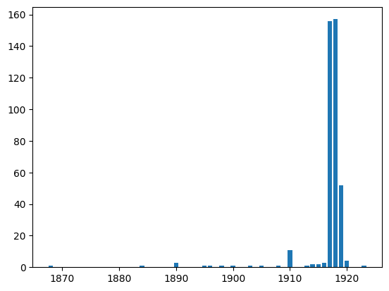

Search pagination#
Next let’s retrieve all the results from this query and keep track of all the dates for each result. Since there are many results, we must use pagination to retrieve all the data.
We start again with importing required Python libraries:
import matplotlib.pyplot as plt # for displaying data
import requests # for making http requests
import time # for pausing between requests
Paginate results#
Here we will loop through the pages of search results and keep track of dates
# We start with the same url from the previous book
url = 'https://www.loc.gov/collections/artists-posters/?q=color&dates=1800/1925&fa=location:united+states&fo=json'
# In order to perform less requests, we can increase the number of results per page (from the default 25)
results_per_page = 150
# Loop through all the pages until there is no more pages
has_more = True
next_url = f'{url}&c={results_per_page}'
dates = []
page = 1
while next_url is not None:
# Make the JSON request
response = None
try:
response = requests.get(next_url)
except KeyboardInterrupt:
break
# Read the response as JSON
data = response.json()
# Read pagination and results
pagination = data['pagination']
results = data['results']
# Keep track of all the dates
dates += [r['date'] for r in results if 'date' in r]
# Check to see if there are more pages
if 'next' in pagination and pagination['next'] and isinstance(pagination['next'], str) and len(pagination['next']) > 0:
next_url = pagination['next']
page += 1
# Wait one second between each request to avoid rate-limiting
time.sleep(1)
else:
next_url = None
print(f'Retrieved {len(dates)} dates from {page} pages of results.')
Retrieved 401 dates from 3 pages of results.
Visualize results#
Finally, we will display all the dates in a simple chart using matplotlib.
# Parse all the years from the dates
yearMap = {}
for date in dates:
date_string = str(date)
# Less than 4 chars, so not enough for a year
if len(date_string) < 4:
continue
# Assume the first 4 chars is the year
year_string = date_string[:4]
# keep track of counts
if year_string in yearMap:
yearMap[year_string] += 1
else:
yearMap[year_string] = 1
# Convert to list
yearData = sorted([(int(year), yearMap[year]) for year in yearMap])
# X-axis values
x = [d[0] for d in yearData]
# Y-axis values
y = [d[1] for d in yearData]
# Plot and show
plt.bar(x, y)
plt.show()
